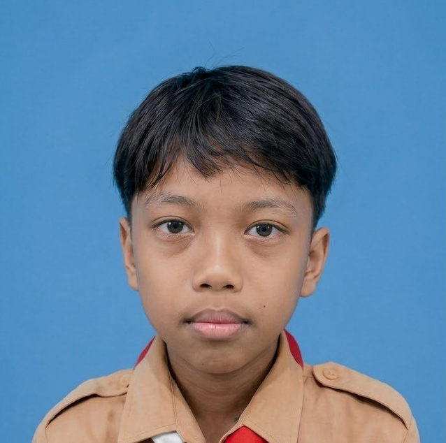

Halo, saya Faizin
Siswa kelas X SMK, calon Junior Web Developer di Kelas Industri UBIG.
Lihat Proyek SayaTentang Saya
Saya tinggal di Malang dan senang mencoba hal baru di dunia teknologi. Saya ingin bisa membuat website yang bermanfaat untuk sekolah dan UMKM di sekitar rumah.
Hobi
- Bermain futsal
- Membaca komik
- Mendesain poster
Cita-cita
Menjadi Full Stack Web Developer. Langkah yang saya rencanakan:
- Menuntaskan Kelas Industri UBIG sampai Semester 4
- Magang di perusahaan teknologi
- Bekerja sebagai Web Developer
Keahlian
- HTML dasar (sedang dipelajari)
- Mengetik cepat
- Desain poster dengan Canva